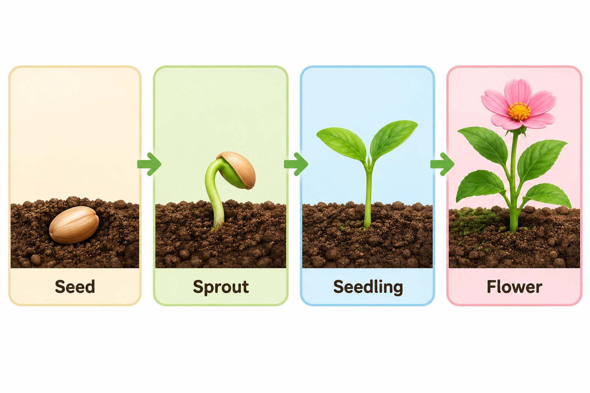

NB013 / education
Plant growth classroom diagram
植物生长课堂图
Suggested frame: 3:2 · Mode: generate · Target: Nano Banana 2.1

Target-model test pending. Any preview on this page is an original imagegen illustration, not evidence of Nano Banana output. No reference image required.
English prompt
Use case: Plant growth classroom diagram. Target aspect ratio: 3:2. A four-stage classroom diagram from left to right: seed, sprout, seedling and flowering plant. Equal rounded panels, aligned soil levels, one-way connecting arrows, white background and gentle colors. Text requirement: Seed; Sprout; Seedling; Flower. No other lettering, watermark or signature. Maintain clear visual hierarchy, useful negative space and consistent light direction. Do not add unrequested objects. Deliver one finished image.
中文提示词
用途：植物生长课堂图。目标画幅：3:2。
儿童课堂用的四阶段植物生长图，从左到右为种子、萌芽、幼苗和开花；每个阶段独立置于相同大小的圆角框内，土壤线对齐，用单向箭头串联，白底柔和配色。
文字要求：Seed；Sprout；Seedling；Flower。除指定文字外不添加任何文字、水印或签名。
构图保持清晰层级、合理留白和统一光源。不要添加未要求的物件。输出单张完成图。Quality review
Match labels to stages and place roots below soil.
顺序与标签一一对应，不把根画在土壤上方。
How to iterate
Set aspect ratio and resolution in your image client. Start at 1K. Fix one failed criterion at a time while preserving everything else; restart from your original reference if identity drifts.